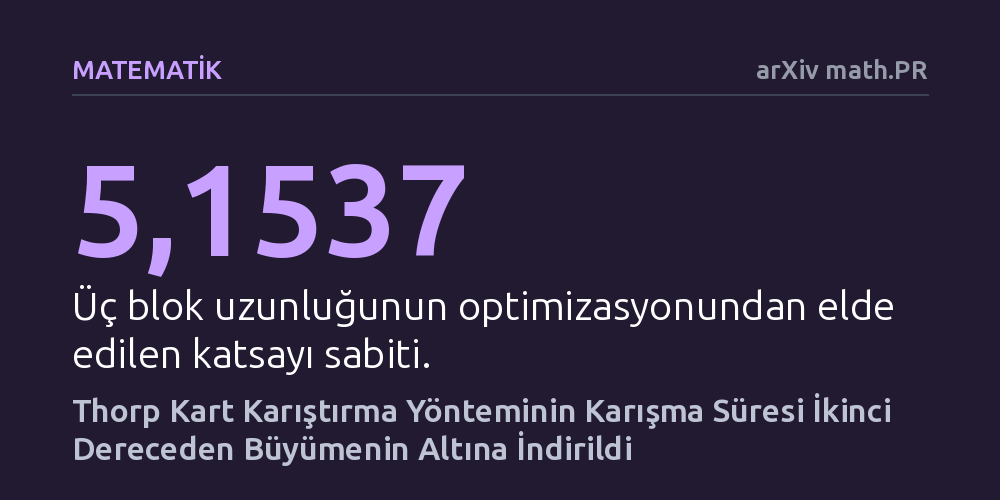

MATEMATIK · arXiv math.PR · 2026-10-16
Çalışmada, iki tabanında boyutlandırılmış kart destelerinde Thorp karıştırma yönteminin tam rastgeleliğe ulaşma süresi araştırıldı. Geliştirilen çok adımlı matematiksel teknikle, bilinen üçüncü dereceden sınır aşılarak karışma süresinin ikinci dereceden büyümenin altına indiği kanıtlandı.
Kusurlu el hareketlerine dayalı pratik kart karıştırmanın tüm desteyi rastgele dağıtması için sanılandan çok daha az hamle yettiğini kuramsal olarak kanıtlar.

Bir deste iskambil kartını karıştırırken çoğu insan kartların tamamen rastgele bir düzene girdiğini varsayar. Oysa matematiksel açıdan bir destenin 'tamamen karışmış' sayılması, her bir olası kart diziliminin tam olarak eşit olasılıkla ortaya çıkabilmesi anlamına gelir. Ünlü matematikçi Edward Thorp tarafından 1973 yılında ortaya atılan Thorp karıştırma yöntemi, kartların kusursuz olmayan insan hareketleriyle ikiye bölünüp araya sokulmasını modelleyen temel bir yapıdır. Uzun yıllardır olasılık teorisyenlerinin zihnini meşgul eden temel soru şuydu: 2^d adet karttan oluşan bir destenin tam rastgeleliğe ulaşması için bu karıştırma işleminin kaç kez tekrarlanması gerekir?
Bu sorunun cevabı yalnızca kumarhane masalarını veya sihirbazlık numaralarını ilgilendirmez; bilgisayar bilimlerindeki rastgele sayı üretiminden karmaşık algoritmaların analizine ve kriptografik protokollere kadar pek çok alan doğrudan bu matematiksel temele dayanır. Eğer bir karıştırma yöntemi çok geç rastgeleliğe ulaşıyorsa, bu durum algoritmik süreçlerde ciddi bir verimsizlik ve güvenlik açığı demektir. Thorp karıştırmasının karışma süresini belirlemek, Markov zincirlerinin geometrik yapılardaki davranışını anlamak açısından da kritik bir sınav niteliğindedir.
Yazar Yunjiang Jiang, bu zorlu matematiksel problemi çözmek için desteyi doğrudan fiziksel kartlar olarak değil, çok boyutlu bir nesne olarak ele almaktadır. n = 2^d kartlık bir destedeki her kart konumu, d boyutlu bir hiperküpün köşelerine denk gelen ikili dizilimlerle (0 ve 1'lerden oluşan dizilerle) etiketlenir. Tek bir fiziksel Thorp karıştırması, hiperküpün koordinat eşleşmesi üzerinde rastgele bir takas katmanı ve ardından koordinatların döngüsel ötelenmesinden oluşur. Dönen bir referans sistemine geçildiğinde bu dönme hareketi ortadan kalkar ve art arda gelen d adet karıştırma, her koordinat yönünde bağımsız birer rastgele takas katmanı içeren tek bir 'tarama' işlemine dönüşür.
Araştırmacı, karışma süresine üst sınır koyabilmek için beş farklı matematiksel bileşeni ustalıkla bir araya getirmiştir. İlk olarak, bir çarpışma çizgisi gösterimi ve negatif bağımlılık özelliği kullanılarak işaretli kartlar için noktasal düzleştirme sağlanmıştır. Ardından, uç nokta momenti kritik üs olan log₂(3/2) değerine taşınarak entropi yaklaşımı keskinleştirilmiş; bu da sürecin rastgeleliğe hazırlanma hızını belirleyen kuramsal bir saat üretmiştir. Üçüncü olarak, permütasyon temsillerindeki kesin katlılıklar Fourier operatör kestirimlerine dönüştürülmüş, dördüncü adımda entropi budaması ile pozitif bir karışım elde edilmiştir. Son olarak, üç bloklu bir yapı kurularak yalnızca iki uzun bloğa entropi düzenlileştirmesi uygulanmış, üçüncü kısa blok ise ek düzleştirme için kullanılmıştır.
Bu çalışmadan önce literatürde kabul gören en iyi sonuç, Ben Morris tarafından yayımlanan ve tam deste için karışma süresinin O(d³) olduğunu gösteren üçüncü dereceden üst sınırdı. Bir başka deyişle, kart sayısı arttıkça gereken işlem sayısı boyutun küpüyle orantılı olarak artıyordu. Jiang'ın geliştirdiği yeni analiz, bu üçüncü dereceden büyüme duvarını aşmayı başararak karışma süresini ikinci dereceden büyümenin altına (subquadratic seviyeye) indirmiştir. Bu durum, destenin tam rastgeleliğe ulaşması için gereken sürenin önceden sanılandan belirgin biçimde daha kısa olduğunu ortaya koymaktadır.
Kanıtın son aşamasında yazar, analizde kurguladığı üç farklı zaman bloğunun uzunluklarını matematiksel olarak optimize etmiştir. Bu optimizasyon sonucunda elde edilen katsayı sabiti C_* = 5,1536951454... olarak tam kesinlikle hesaplanmıştır. Makalede ifade edildiği üzere, 'Üç blok uzunluğunun optimize edilmesi yukarıdaki sabiti verir.' Elde edilen bu açık katsayı, Thorp karıştırma modelinde rastgeleliğe yakınsama hızını soyut bir büyüme hızının ötesinde somut bir matematiksel çerçeveye oturtmaktadır.
Elde edilen bu kuadratik altı üst sınır, yalnızca tek bir kart karıştırma bilmecesini çözmekle kalmayıp sonlu gruplar üzerindeki rastgele yürüyüşlerin analizinde yeni bir yöntemsel yol açmaktadır. Özellikle entropi momentlerinin kritik üslere taşınması ve Fourier analizinin permütasyon temsilleriyle birleştirilmesi, benzer Markov zincirlerinin analizinde karşılaşılan tıkanıklıkları aşmak için güçlü bir şablon sunmaktadır. Yüksek boyutlu küpler üzerindeki dinamik süreçlerin sanılandan daha hızlı 'hafızasını kaybettiği' ve başlangıç durumundan bağımsızlaştığı gösterilmiştir.
Bununla birlikte, ortaya konan sonucun pratik hayattaki elle kart karıştırma sürelerini doğrudan bir gecede değiştirmesi beklenmemelidir; çünkü 52 kartlık standart bir deste için d değeri yaklaşık 5,7 gibi küçük bir sayıdır ve buradaki asıl kazanım deste boyutu devasa sayılara ulaştığındaki asimptotik davranışta ortaya çıkar. Yine de teorik bilgisayar bilimi ve istatistiksel fizik açısından bu kanıt, simetriye ve yerel takaslara dayalı karmaşık sistemlerin dengeli dağılıma nasıl ulaştığını anlamada değerli bir ilerlemeyi temsil etmektedir.